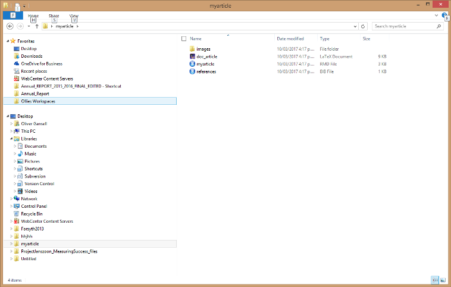

DocRR
Making reproducible reports in NZ Department of Conservation (DOC) approved styles
This repository contains a series of templates for creating HTML and PDF documents in rmarkdown using the style themes employed by NZ Department of Conservation (DOC).
Getting started
Getting started
In order for PDF output to work you need to make sure you have a LaTeX distribution installed. MIKTEX is the most common distribution to use.
Installing the package
First off install the devtools package if you haven’t already.
install.packages("devtools")
Now install the DocRR package using devtools::install_github('ogansell/DocRR').
Creating a template in RStudio
RStudio supports these templates natively.
If using RStudio you can now load pre-made templates for outputting analysis and reporting in HTML or PDF format. To do this go to File>New File and select ‘RMarkdown’

From here you can now load any one of the templates by selecting RMarkdown>From Template and selecting any one of the templates under ‘DocRR’.
Select the template you want to load, give it a name and save it.

Important to note here is that when you save your file a folder structure for your file is automatically made. This is because the templates have some extra files they are dependant on in order to compile.
You’ve now got a template for producing a pdf report to begin working on. Press the knit button to have a look at what it produces.

After installation
When making HTML pages a common intermediate step is to knit your document to .docx format. This makes it easy to send to reviewers to get their input. The webshot package is useful in this instance as it includes a screenshot of any htmlwidgets used in the knitted .docx file. It require installation of the PhantomJS software. This causes installation of the DocRR package to fail on older installations of R so it is recommended to install this manually after installing DocRR. Do this by running the code webshot::install_phantomjs().
Creating a template outside of RStudio
If you’re not using RStudio it’s still easy to use these templates.
Wrapper functions have been made to make it easy to load a template.
There is one function for each template. The document names are examples only, you can name the .Rmd file whatever you like.
Functions below:
DocRR::article("myarticle.Rmd") DocRR::article_book("myarticle.Rmd") DocRR::report("myreport.Rmd") DocRR::report_book("myreport.Rmd") DocRR::plain_html("myplainwebpage.Rmd") DocRR::tab_html("mytabbedwebpage.Rmd") DocRR::indicator_html("myindicatorfactsheet.Rmd")
To compile your document use rmarkdown::render("my_article/my_article.Rmd"). Remember that you need to point it to the right directory, which means you need to include the folder which was automatically created to host your .Rmd file.
Extra information
You can now start making documents using these templates. It’s important to remember that each template has been designed for a specific output (i.e. pdf articles or reports, plain webpages, web pages with tabbed layout or standardised pages for reporting on biodiversity indicators). Therefore the docarticle or docreport templates won’t work for making webpages and web templates won’t work for generating pdf’s. Saying that, all of the templates will output to .docx (word format) provided some of the yaml metadata is altered (we’ll cover this later). This is useful for giving reviewers who aren’t familiar with R or rmarkdown a version of your document for editing and making comments.
You’ll see there are 2 versions of the article and report pdf templates (i.e. docarticle and docarticle_bookdown). The bookdown package adds the extra utility of cross referencing tables and figures in text. This is especially handy for scientific/technical publications with lots of tables and graphs, but is also useful for images etc. Using the bookdown templates seems to cause some problems when knitting documents on some computers, so article and report templates have been included which do not use the bookdown package. Guidance on how to cross-reference using bookdown has been provided in each of the templates.
Changing colours
Changing colours
The templates in this package have all of the style elements needed to adjust the colour of banners or fonts according to the DOC style guidelines. There are 7 different colours to use for banners at the top of the first page and for text headings.
Changing colours in PDF or web output normally requires some working knowledge of LaTeX, HTML and CSS code. To make life easier for users of this package functions have been defined in R to allow the user to easily choose whatever colour is required for banners and fonts in both web and pdf output. The colours for banners and fonts are shown in the table below. Beside each colour you can see the function for the banners for pdf articles and reports and for webpages. There is also a function for specifying the colour of headings for webpages. A different approach is used for colour of headings for PDF output.
| Colours | Functions | |||
|---|---|---|---|---|
| Banners | Font | |||
| PDF Article | PDF Report | Web banner | Web font | |
Alpine
|
DocRR::Alpine
|
DocRR::Alpine_report
|
DocRR::Alpine_web
|
DocRR::font_Alpine
|
Lake
|
DocRR::Lake
|
DocRR::Lake_report
|
DocRR::Lake_web
|
DocRR::font_Lake
|
Sunset
|
DocRR::Sunset
|
DocRR::Sunset_report
|
DocRR::Sunset_web
|
DocRR::font_Sunset
|
Fauna
|
DocRR::Fauna
|
DocRR::Fauna_report
|
DocRR::Fauna_web
|
DocRR::font_Fauna
|
Kiwi
|
DocRR::Kiwi
|
DocRR::Kiwi_report
|
DocRR::Kiwi_web
|
DocRR::font_Kiwi
|
Honey |
DocRR::Honey
|
DocRR::Honey_report
|
DocRR::Honey_web
|
DocRR::font_Honey
|
Greyscale |
DocRR::Greyscale
|
DocRR::Greyscale_report
|
DocRR::Greyscale_web
|
DocRR::font_Greyscale
|
PDF output
PDF output
HTML output
HTML output
Markdown basics
Markdown basics
Writing text
An advantage of markdown is that it is a really simple typesetting language. The structure of it is really simple.
To make stuff bold use 2 ’**’ either side of your text
To make italics use ’_’ either side of the text you want italicized
Most of the standard things involved in writing a report can be found here:
Tables
Making and displaying tables in rmarkdown is really easy. If working with data and wanting to display a table we can use the kable function in R like this:
require(knitr)#Need to load the knitr library
kable(head(iris,10)) #Display the first 10 rows of the dataset| Sepal.Length | Sepal.Width | Petal.Length | Petal.Width | Species |
|---|---|---|---|---|
| 5.1 | 3.5 | 1.4 | 0.2 | setosa |
| 4.9 | 3.0 | 1.4 | 0.2 | setosa |
| 4.7 | 3.2 | 1.3 | 0.2 | setosa |
| 4.6 | 3.1 | 1.5 | 0.2 | setosa |
| 5.0 | 3.6 | 1.4 | 0.2 | setosa |
| 5.4 | 3.9 | 1.7 | 0.4 | setosa |
| 4.6 | 3.4 | 1.4 | 0.3 | setosa |
| 5.0 | 3.4 | 1.5 | 0.2 | setosa |
| 4.4 | 2.9 | 1.4 | 0.2 | setosa |
| 4.9 | 3.1 | 1.5 | 0.1 | setosa |
kable works really well with HTML or PDF output and for simple tables.It also works really well in this type of workflow where you have your analysis in the same workflow and you need to output a summary table.
If displaying solely in HTML the DT library has some good options for displaying more complex data.
require(DT)## Loading required package: DT## Warning: package 'DT' was built under R version 3.3.2datatable(iris)You’ll see that DT tables have more options for filtering and searching data. This can be helpful if you have a more complicated table you want to show. DT tables don’t work if you want a PDF report.
You can also generate a table in straight markdown.
This looks like this:
| Sepal.Length | Sepal.Width | Petal.Length | Petal.Width | Species |
|--------------|-------------|--------------|-------------|---------|
| 5.1 | 3.5 | 1.4 | 0.2 | setosa |
| 4.9 | 3.0 | 1.4 | 0.2 | setosa |
| 4.7 | 3.2 | 1.3 | 0.2 | setosa |
| 4.6 | 3.1 | 1.5 | 0.2 | setosa |
| 5.0 | 3.6 | 1.4 | 0.2 | setosa |
| 5.4 | 3.9 | 1.7 | 0.4 | setosa |
| 4.6 | 3.4 | 1.4 | 0.3 | setosa |
| 5.0 | 3.4 | 1.5 | 0.2 | setosa |
| 4.4 | 2.9 | 1.4 | 0.2 | setosa |
| 4.9 | 3.1 | 1.5 | 0.1 | setosa |But renders in HTML like this:
| Sepal.Length | Sepal.Width | Petal.Length | Petal.Width | Species |
|---|---|---|---|---|
| 5.1 | 3.5 | 1.4 | 0.2 | setosa |
| 4.9 | 3.0 | 1.4 | 0.2 | setosa |
| 4.7 | 3.2 | 1.3 | 0.2 | setosa |
| 4.6 | 3.1 | 1.5 | 0.2 | setosa |
| 5.0 | 3.6 | 1.4 | 0.2 | setosa |
| 5.4 | 3.9 | 1.7 | 0.4 | setosa |
| 4.6 | 3.4 | 1.4 | 0.3 | setosa |
| 5.0 | 3.4 | 1.5 | 0.2 | setosa |
| 4.4 | 2.9 | 1.4 | 0.2 | setosa |
| 4.9 | 3.1 | 1.5 | 0.1 | setosa |
The website http://www.tablesgenerator.com/ is really useful for converting tables between different formats. The advantage of using markdown format is that it gives more flexibility for situations where you may need to to more editing inside a table, such as adding footnotes which you would do like this:
| Sepal.Length [^1] | Sepal.Width | Petal.Length | Petal.Width | Species |
|--------------|-------------|--------------|-------------|---------|
| 5.1 | 3.5 | 1.4 | 0.2 | setosa |
| 4.9 | 3.0 | 1.4 | 0.2 | setosa |
| 4.7 | 3.2 | 1.3 | 0.2 | setosa |
| 4.6 | 3.1 | 1.5 | 0.2 | setosa |
| 5.0 | 3.6 | 1.4 | 0.2 | setosa |
| 5.4 | 3.9 | 1.7 | 0.4 | setosa |
| 4.6 | 3.4 | 1.4 | 0.3 | setosa |
| 5.0 | 3.4 | 1.5 | 0.2 | setosa |
| 4.4 | 2.9 | 1.4 | 0.2 | setosa |
| 4.9 | 3.1 | 1.5 | 0.1 | setosa |
Table: A table about some sort of flower
[^1]: A footnote about Sepal lengthWhich looks like this:
| Sepal.Length1 | Sepal.Width | Petal.Length | Petal.Width | Species |
|---|---|---|---|---|
| 5.1 | 3.5 | 1.4 | 0.2 | setosa |
| 4.9 | 3.0 | 1.4 | 0.2 | setosa |
| 4.7 | 3.2 | 1.3 | 0.2 | setosa |
| 4.6 | 3.1 | 1.5 | 0.2 | setosa |
| 5.0 | 3.6 | 1.4 | 0.2 | setosa |
| 5.4 | 3.9 | 1.7 | 0.4 | setosa |
| 4.6 | 3.4 | 1.4 | 0.3 | setosa |
| 5.0 | 3.4 | 1.5 | 0.2 | setosa |
| 4.4 | 2.9 | 1.4 | 0.2 | setosa |
| 4.9 | 3.1 | 1.5 | 0.1 | setosa |
Figures
When writing a report in Microsoft Word or similar and you want to display graphs and figures you have to generally copy and paste plots manually into your document. This lends itself to making mistakes and becomes tedious when your data/presentation changes.
Using rmarkdown, R (or other language) and knitr it is really easy to place your figure in your work exactly where you want it to go. If your data changes then it is as simple as ensuring your new data is called to update your figure.Figure 1 tells us simple things about the iris dataset.
plot(iris)Figure 1: Something to do with flowers
A footnote about Sepal length↩